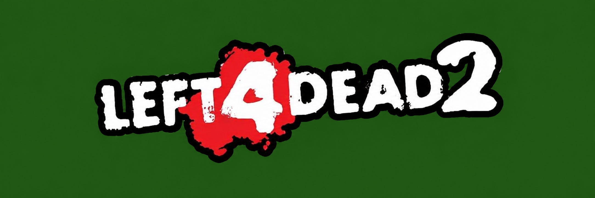
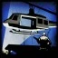
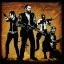

una enciclopedia donde puedes encontrar informacion sobre el juego
Left 4 Dead 2 es un videojuego de disparos en primera persona de tipo acción creado por la compañía Valve. Corresponde a la secuela de Left 4 Dead y se lanzó al mercado el 17 de noviembre de 2009 en Estados Unidos y Latinoamérica. En Europa llegó tres días después, el 20 de noviembre. Esta secuela, al igual que su predecesor, está disponible para PC y para la consola Xbox 360.
